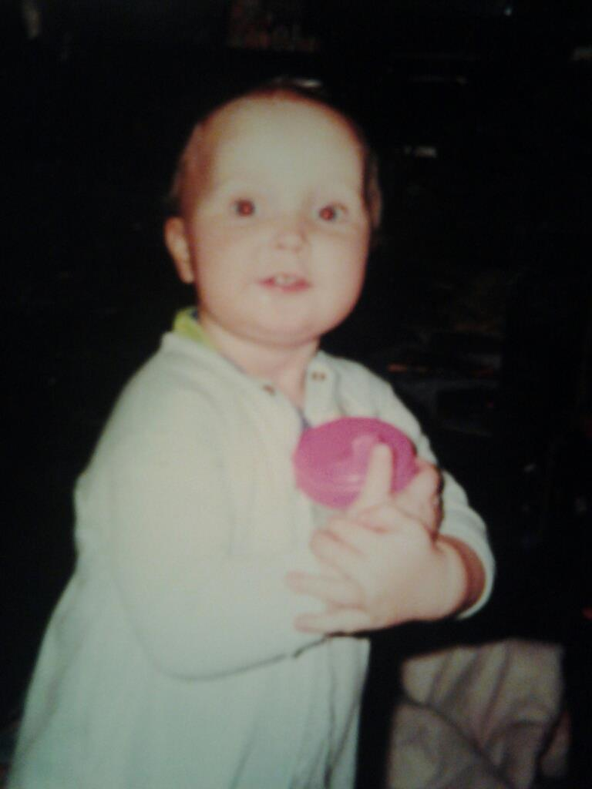
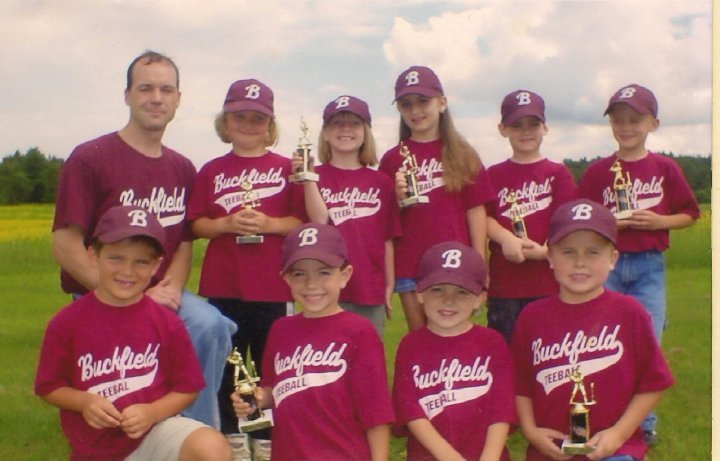
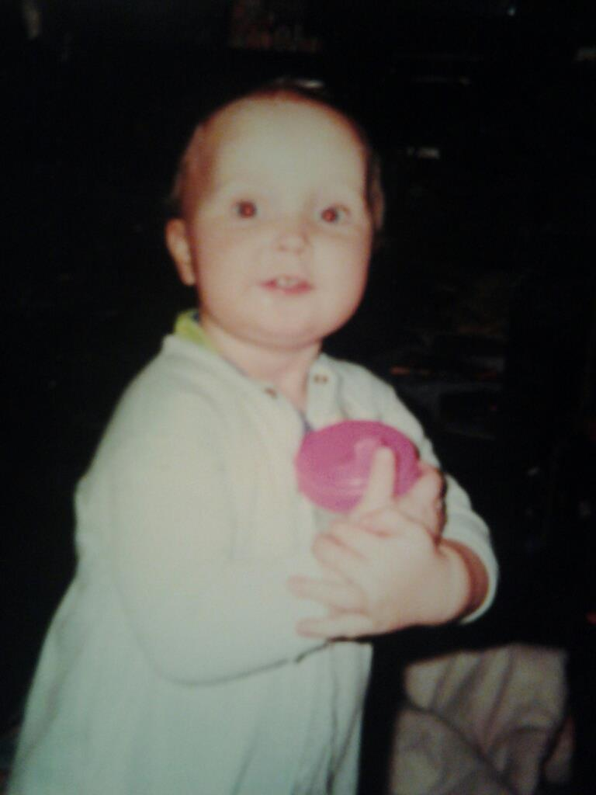
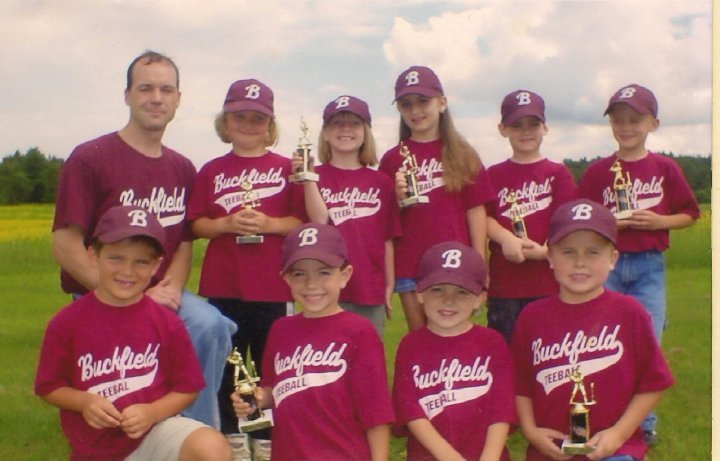

I was the last born of three kids. So basically I was the spoiled brat that siblings always hate. I was born on Augusta 24, 1998.
My due date was much earlier but I was a stubborn kid. My mother had to have a c-section with me because we had blood match issues.
The doctors were surprised that she already had two kids and my mom wasn't allowed to have anymore. I like to say that I was just so perfect that her body knew it and
there was no reason for another kid.
My childhood wasn't all rainbows and sunshine though. My parents got divorced when I was going into second grade. I didn't really understand it at the time.
All I knew was my parents weren't living together anymore and I was moving a lot. In the long run though I'm glad it happened. Around second grade was when I started going to my
grandmothers a lot. I started working for them because they own a honeybee company. And no I don't mean like working/playing. I mean basically doing whatever she told me to do like vacuum, dishes,
extract, carry jars, etc. Way more than a child my age should have to do.
This was also the time I started playing sports which is a hobby for me. I was also extremely tall for my age by the time I hit the third grade. This made sports a lot easier for me considering I had about a foot on everyone.
 


